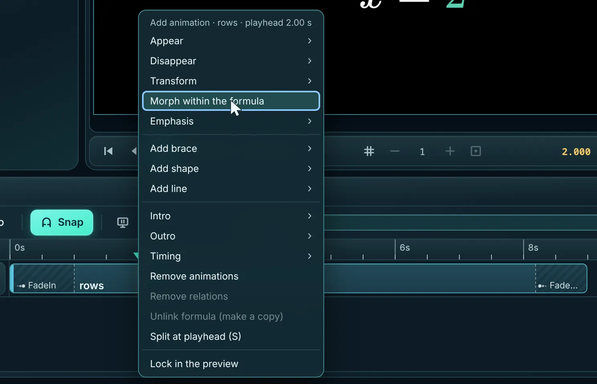
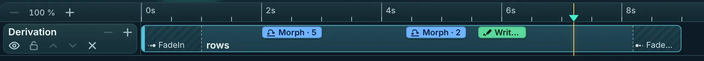
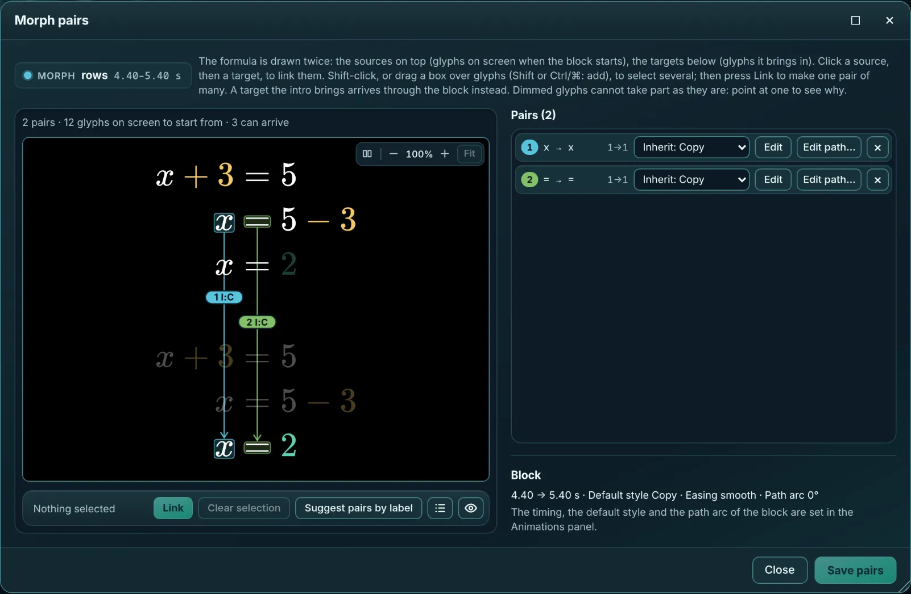
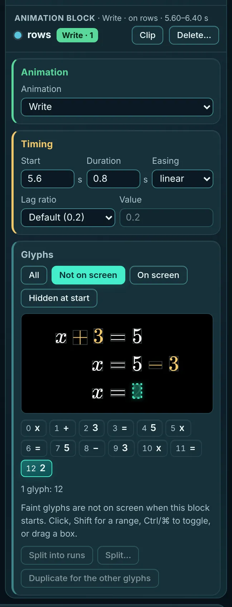
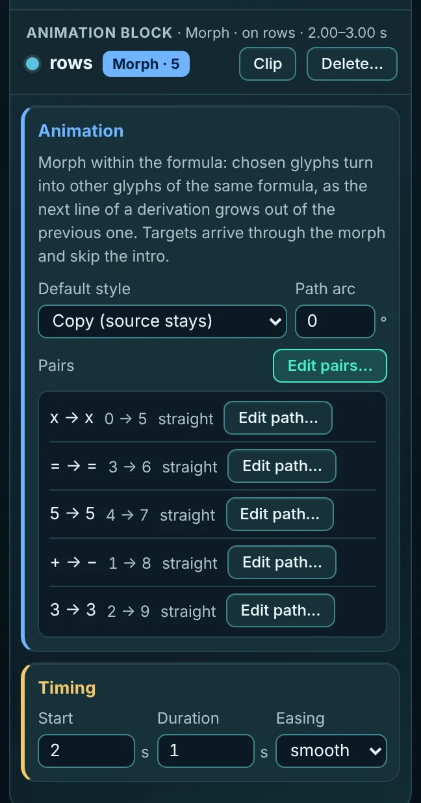
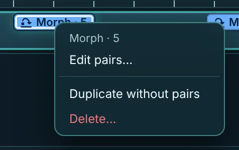
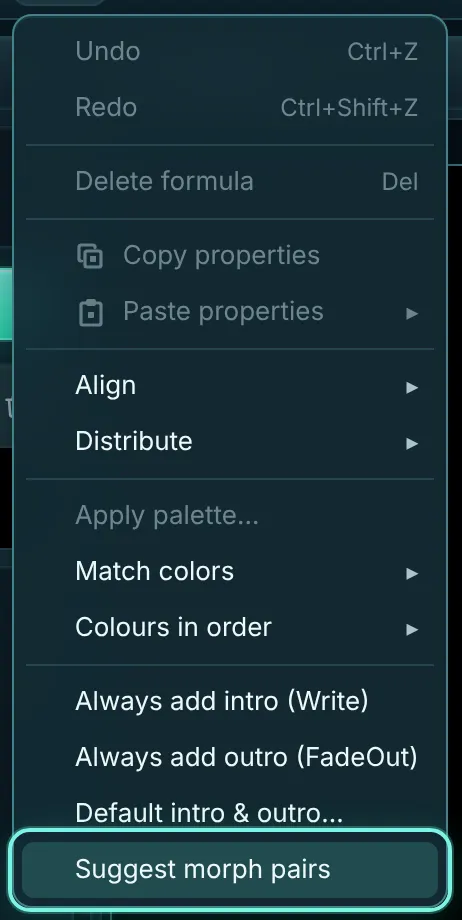

Morph blocks
A Morph block turns glyphs of a formula into other glyphs of the same formula, the way a derivation is written: each row grows out of the one above it, and the rows stay.
What a Morph block does
You write the whole derivation as one formula, one row per line, and put it on the timeline. Only its first row appears with the clip. A Morph block placed later in the clip names pairs of glyphs: a source, which is on screen when the block starts, and a target, a glyph of a later row. During the block the targets arrive, moving out of their sources. By default the sources stay where they are, so the rows pile up like a derivation on a blackboard.
A Morph block is a relation inside one clip. Its pairs, their styles, the arc of their paths and their timing work as they do between two clips: see How relations work and the relation editor. What is new is where the glyphs live.
A Morph block works on an object that has glyphs, such as a formula or a text. A brace, a shape or a line is one piece and has no Morph.
Morph, or a relation between clips?
Both solve the same equation in the same three steps. Here is the equation of the first transform twice: on the left three formulas linked by two relations, each replacing the one before it; on the right one formula with two Morph blocks, whose rows stay.
| Relation between clips | Morph block | |
|---|---|---|
| Formulas | Two, each with its own clip on its own track. | One, in one clip. |
| Layout | Each clip is placed, scaled and coloured on its own. | LaTeX lays the rows out: an & lines the equals signs up. |
| The source | Consumed by Transform and Fade transform; stays with Copy (source stays) and Fade copy (source stays). | Stays: Copy is the default style. |
| Timing | A window inside the target clip. | A block anywhere in the clip, with the same easing and duration. |
| The glyphs come from | Another formula, which may be anywhere in the scene. | Other glyphs of the same formula. |
Choose Morph for a derivation that stays on screen, aligned on an equals sign, where each line comes from the one above. Choose a relation when one formula becomes another in place, when the second one must be placed, scaled or coloured on its own, or when the first one leaves. The two mix: a glyph of a row can also arrive from another formula through a relation.
Write the derivation
Type the rows in the Raw LaTeX field of the formula editor, one per
line. Manim sets every formula in an aligned environment, so & marks the
column the rows line up on and \\ ends a row:
x + 3 &= 5 \\
x &= 5 - 3 \\
x &= 2Place the formula on the timeline as it is: nothing needs hiding. A glyph that a Morph block brings in skips the clip's intro and arrives through the block. A dropped clip lasts three seconds; drag its right edge, or set its End in the Timing tab, so that there is room for the blocks.
Add a Morph block
Put the playhead at the time the block should start, right-click the clip and choose
Morph within the formula: the block starts at the playhead. (The
Add animation button of the Timing tab offers the same
entry, at the playhead too.) The block is one second
long and has no pairs yet: the timeline writes it Morph · 0, the number being its
pairs.


Choose the pairs
Open the pair editor with Edit pairs…: in the Animations panel when the block is selected, or in the block's right-click menu. The editor draws the formula twice: the glyphs that are on screen when the block starts, the sources, and the glyphs the block can bring in, the targets. It lays the two copies out the way that draws the glyphs that can take part larger. For these three rows that is one over the other: the sources above, the targets below. In a taller derivation a block may open side by side, the sources at the left, each line beside its own and the links as arcs over them, as the second block of the derivative tutorial does. The first key over the corner of the drawing changes the layout, and the drawing takes glyphs with a circle, zooms and moves as the relation editor's does.
Linking glyphs
- Click a source, then a target (or the other way round): they become a pair.
- Several at once: Shift-click glyphs of one side, or drag a box over them (with Shift or Ctrl held it adds to what is selected), do the same on the other side, and press Link. The pair has many sources, many targets, or both.
- A target that is already linked takes the new source into its pair, so two glyphs become one.
- The style from the start: a pair made by a click has the style of the block. Right-click the target instead of clicking it and choose Link as Transform, Link as Copy, Link as Fade transform or Link as Fade copy; a style those glyphs cannot take is greyed out, with the reason under it, as in the relation editor.
- A source that a pair consumes, with the style Transform or Fade transform, is outlined in red dashes, as in the relation editor: it is gone once the pair has played, so another pair can only copy it. Copy, the block's default, and Fade copy outline nothing.
- Each row of the list of pairs has a menu for the style of its pair, and an Edit path… button. Right-click a glyph of a pair (or select it and click the badge of its link) for the same choices and for Delete link….
Suggest pairs by label
Suggest pairs by label draws dashed links for you: each glyph that
can arrive takes the nearest glyph before it, in reading order, that has the same label and
can be a source. Accept all turns them into pairs;
Dismiss throws them away. It is a quick start for the glyphs that stay
the same from one row to the next. It cannot know that a + becomes a
−: link those by hand, as the clip shows.
Which glyphs can take part
Glyphs that cannot take part as they are drawn dimmed; point at one and its tooltip says why. A source must be fully on screen when the block starts. A target must not be on screen yet, or be there only because the intro brought it, and nothing else may bring it in. Neither may be busy with another animation while the block runs.

| The tooltip says | It means |
|---|---|
| not on screen yet · still arriving · off screen by then | As a source: it is not fully on screen when the block starts. |
| consumed earlier | An earlier pair of the clip took the glyph out with Transform or Fade transform: it is gone, as a source and as a target. |
| a source of an earlier transfer | As a target: an earlier pair copies from it, so it must be on screen already. |
| brought in by a relation · brought in by another Morph block | As a target: something else brings it in. A glyph has one owner. |
| on screen already · on screen earlier | As a target: it is there before the block. |
| busy during the block (…) | Another animation, the intro or the outro runs on it. |
A pair is never made of one glyph on both sides of the block. When the pairs would break a rule, the side column of the editor lists the problems, each line starting with error or warning, and Save pairs waits until no error is left. The whole session is one step of the undo history; Cancel asks before it throws changes away.
Glyphs that no pair brings
The 2 of the last row comes from nothing: no glyph turns into it. Give it its own block. Add an Appear animation, such as Write, at the time it should be drawn, and pick the glyph in the panel of the block. A glyph that is the target of a pair, or the glyph of an Appear block, waits off screen by itself.

The block's settings
Select the block to see its panel. Its Default style is the style of every pair that has none of its own (a pair can choose in the editor):
- Copy (source stays), the default, sends a copy of the glyph and leaves the
original in its row, as Manim's
TransformFromCopydoes. - Transform moves the glyph itself: its row loses it (Manim's
ReplacementTransform). - Fade transform fades the source into the target (
FadeTransform). - Fade copy (source stays) fades a copy of the source into the target
and leaves the original in its row (
FadeTransformof a copy).
A default style that would give the project an error, a source that another pair consumes already for instance, is not set, and the notice Default style not changed says why: give the pairs that clash a style of their own, or keep the default.
Below the style come the Path arc, in degrees (a full turn at most, either way), that bends the glyphs' paths (Custom paths explains it), the pairs, read-only, each with what its glyphs follow and its own Edit path…, and the usual timing: start, duration and easing.

Moving, copying and deleting
Drag a block on the timeline to move it and pull its edges to resize it, like any block. A Morph block stops before it would run into another animation of one of its glyphs. A block's right-click menu has Edit pairs…, Duplicate without pairs (a glyph arrives through one pair only, so a copy starts empty) and Delete….


With Edit ▸ Suggest morph pairs on (it is off by default), a new Morph block starts with the pairs Suggest finds, as one undo step.
How it exports
A Morph block is a self.play(…) over its window, with one animation for each pair; when
another animation starts or ends inside the window, the export cuts the play into slices
(the blocks page shows how).
A copy is ReplacementTransform of a copy of the source in ManimCE and
TransformFromCopy in ManimGL; the block's duration becomes
run_time, and an easing other than the default smooth becomes
rate_func. The first block of the project below, in ManimCE and in ManimGL:
self.play(
ReplacementTransform(rows_g[0].copy(), rows_g[5]),
ReplacementTransform(rows_g[3].copy(), rows_g[6]),
…
run_time=1,
) self.play(
TransformFromCopy(rows_g[0], rows_g[5]),
TransformFromCopy(rows_g[3], rows_g[6]),
…
run_time=1,
)Where to go next
- Transformation recipes gives eight common moves of algebra, each a small project to play and open.
- A derivative from first principles builds a five-row derivation with Morph blocks, from start to finish.
- Custom paths makes glyphs travel along an arc, or along a path you draw in the Preview.